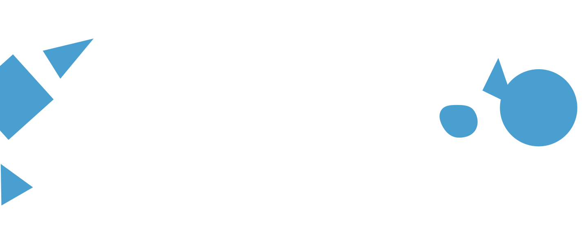

ID {{ item.id_usuarios }}
{{ item.nombre.charAt(0).toUpperCase() + item.nombre.slice(1)}}
{{ item.apellido.charAt(0).toUpperCase() + item.apellido.slice(1) }}

ID {{ user.id_usuarios }}
{{ user.nombre.charAt(0).toUpperCase() + user.nombre.slice(1)}}
{{ user.apellido.charAt(0).toUpperCase() + user.apellido.slice(1) }}